Welcome to our grapevine
Current news and events
October 8th, 2026 2:00PM (EST)How Patch Management and Employee Training Prevent 90 Percent of Small Business Ransomware Attacks
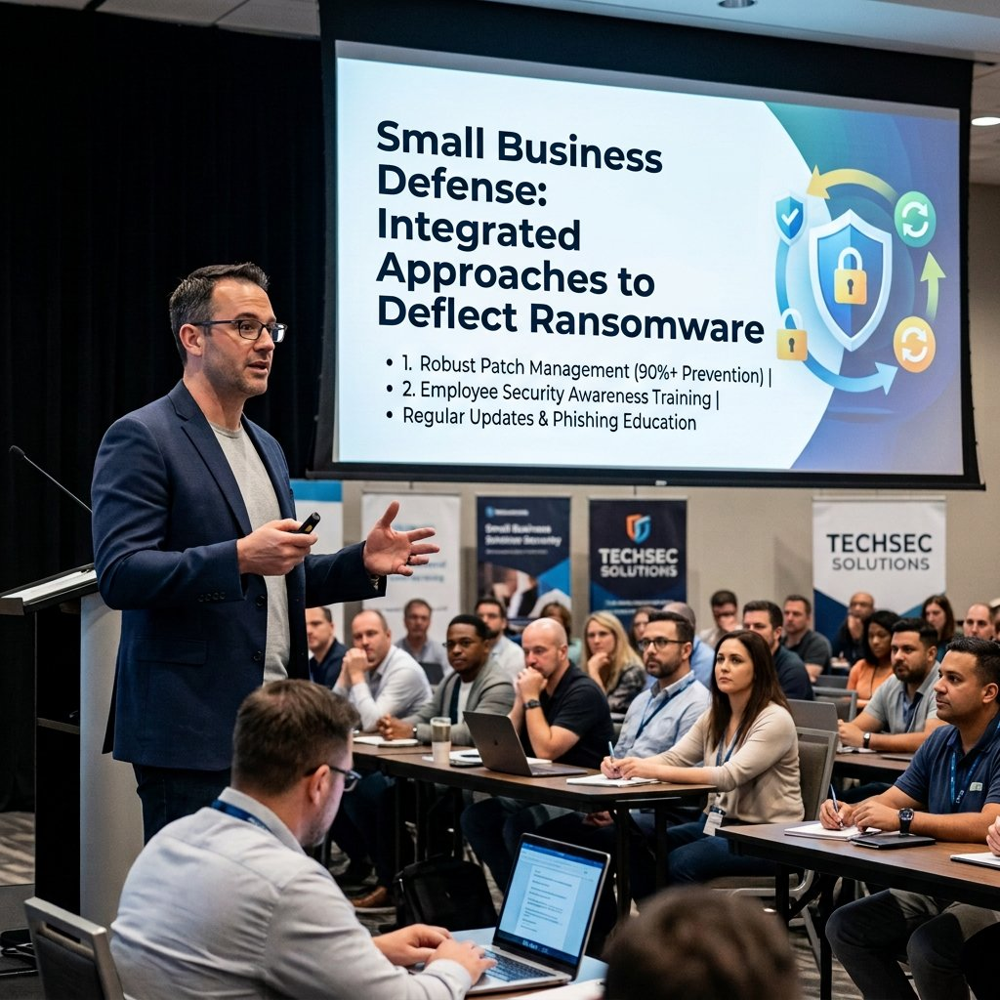
Many small business owners assume hackers only target massive corporations. In reality, automated bots sweep the internet looking for easy targets. You can easily protect your business operations by combining two simple, budget-friendly security habits: automated patch management and basic employee training.
Here are the two simple pillars that keep your business safe:
- Automated Patch Management: Software updates are critical security repairs. When developers find a vulnerability, they issue a “patch” to seal it. Delaying updates leaves your digital windows wide open to hackers. Automating your software, router, and server updates permanently locks these entry points before cybercriminals can exploit them.
- Ongoing Employee Training: The strongest firewall cannot stop ransomware if an employee accidentally clicks a malicious link. Teaching your team to recognize basic phishing red flags builds a powerful “human firewall.” Routine, harmless phishing simulations give your staff hands-on experience in spotting real-world traps safely.
Moving your business from reactive panic to proactive defense is simple. At LiquidComputerz, we handle the technical updates and staff training to protect your company ecosystem. Contact us today to secure your infrastructure before a hacker forces you to.
Stopping small business ransomware through automated updates and employee training.
Regis Metzger
Lead Technician at LiquidComputerz
August 23rd, 2026 11:30PM (EST)The Digital Spring Cleaning Guide: How to Safely Defragment and Optimize Your Storage Drives
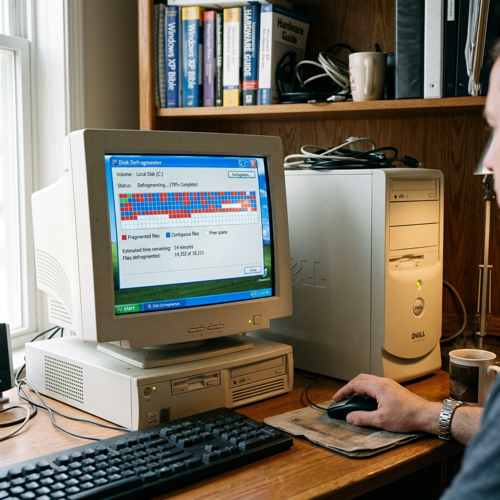
Over time, your computer accumulates invisible digital clutter, leftover app data, and fragmented files that bog down system performance. While older mechanical hard drives physically scatter file fragments across a spinning disk and require defragmentation to reorder them, modern Solid State Drives (SSDs) operate on entirely different flash-memory technology. Running traditional defragmentation software on an SSD is not only useless, but it actually inflicts unnecessary wear and tear, shortening the lifespan of your expensive storage hardware. True optimization requires a delicate approach that clears out system bloat while utilizing safe, drive-specific maintenance commands.
LiquidComputerz breathes new life into sluggish computers with deep hardware and storage optimization routines. We safely clear out corrupt cache files, manage your drive sectors, and configure the correct optimization tools like TRIM commands for your SSDs to restore blazing-fast read and write speeds. Our technicians also analyze your data distribution to free up critical storage space and ensure your operating system runs at peak efficiency. Partner with us to run a professional digital cleanup, protect your hardware investments, and get your computers running like new again.
Safely optimize your storage drives to restore blazing-fast performance.
Regis Metzger
Lead Technician at LiquidComputerz
August 23rd, 2026 11:15PM (EST)Stop Sharing Your Password: How to Set Up a Secure Guest Wi-Fi Network
Handing out your main Wi-Fi password to guests, vendors, or customers creates a massive security vulnerability for your entire network. When an outside device connects to your primary network, it gains direct visibility to everything on it, including your personal computers, private company servers, and network-attached storage drives. If a visitor’s phone happens to carry hidden malware, that infection can silently hop across your open airwaves, compromising your private data and stalling your hardware.
LiquidComputerz protects your internal infrastructure by building isolated, secure guest networks that separate visitor traffic from your private data. We configure your router to deploy a dedicated virtual local area network (VLAN) specifically for guests, granting them fast internet access while completely blocking their path to your sensitive systems. Our team sets up automated bandwidth limits to keep guest streaming from slowing down your primary work devices, ensuring total network control. Partner with us to shield your core operations and host visitors with absolute peace of mind.
Isolate visitor traffic to keep your private network safe.
Regis Metzger
Lead Technician at LiquidComputerz
August 23rd, 2026 11:00PM (EST)Is Your Smart TV Spying on You? How to Block Tracking and Intrusive Ads
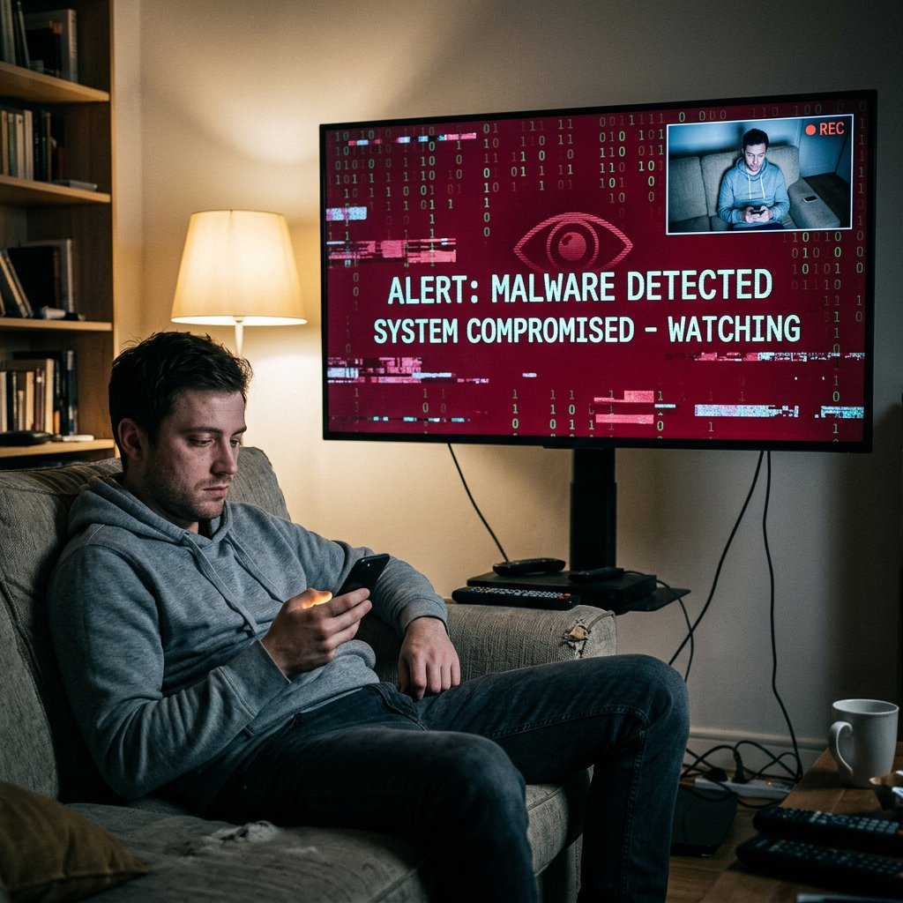
Smart TVs bring endless entertainment into our living rooms, but they also act as aggressive data collection hubs that track your viewing habits in real time. Using a technology called Automatic Content Recognition (ACR), your television analyzes every frame on your screen—whether you are watching cable, streaming an app, or playing a video game—and sells that profiling data to advertisers. This constant background tracking not only floods your home screen with intrusive, unskippable ads but also hogs your internet bandwidth and exposes your household to potential network privacy leaks.
LiquidComputerz takes back control of your living room by locking down your entertainment system’s privacy settings from the ground up. We dive into your television’s complex firmware to disable invasive ACR tracking, block hidden diagnostic data sharing, and remove built-in advertising IDs. For ultimate privacy, our technicians can configure network-level ad blockers like Pi-hole on your router, stopping intrusive smart TV commercials before they ever reach your screen. Partner with us to enjoy a cleaner, faster, and completely private streaming experience.
Block smart TV tracking to reclaim your living room privacy.
Regis Metzger
Lead Technician at LiquidComputerz
August 23rd, 2026 10:45PM (EST)Modernizing the Old Foil: Upgrading Static Security Tape to Smart Window and Door Sensors
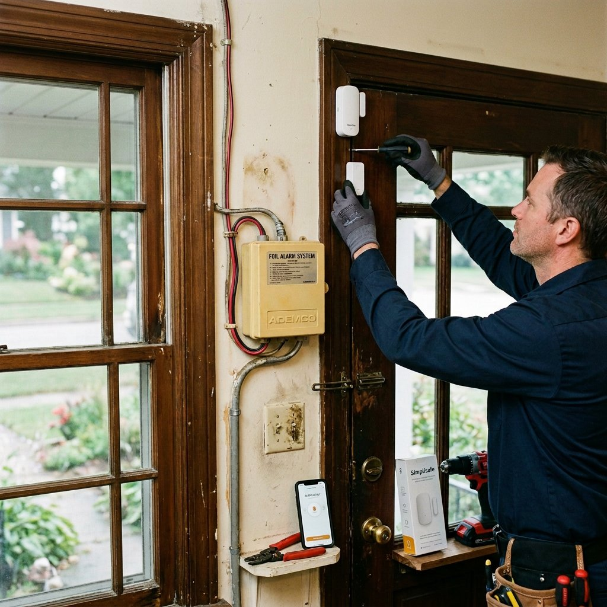
Legacy foil-tape security systems offer a fragile, outdated defense that modern intruders can easily bypass without breaking the glass. These brittle metallic strips mar your storefront’s aesthetic and frequently fracture from temperature changes or routine cleaning, triggering costly false alarms. Because they only react to broken glass, foil systems leave your property completely exposed to lock-picking, door prying, or silent entry methods that keep the circuit intact.
LiquidComputerz strips away these relics and installs intelligent, low-profile magnetic contact and vibration sensors across your entry points. We integrate these sleek devices into a central dashboard that alerts your phone the exact second a window vibrates or a door frame separates. Our technicians handle the system reprogramming, ensuring your property gains comprehensive perimeter defense without ruining your storefront design. Partner with us to transition from passive, fragile tape to proactive, smart security tracking.
Replace fragile foil tape with intelligent, proactive entry sensors.
Regis Metzger
Lead Technician at LiquidComputerz
August 23rd, 2026 10:30PM (EST)Upgrade Your Old POS to Accept Tap, Apple Pay, and Google Wallet
Relying on an outdated checkout terminal that only handles traditional cash and card swipes slows down your lines and actively drives away tech-savvy customers. Modern consumers expect frictionless, contactless checkout experiences, and turning down payment options like Apple Pay, Google Wallet, or chip tapping hurts your daily sales revenue. Furthermore, these older point-of-sale systems lack the robust security standards required to protect your business and your clients from modern digital fraud.
LiquidComputerz modernizes your checkout experience by seamlessly upgrading your retail or hospitality infrastructure to a cutting-edge payment platform. We handle the technical heavy lifting by installing smart POS hardware, configuring secure encryption protocols, and integrating payment processing directly with your inventory software. Our team ensures your terminal transition is smooth, compliant, and completely hassle-free without disrupting daily operations. Partner with us to accelerate transaction speeds, diversify your payment options, and instantly boost customer satisfaction.
Accept contactless payments and speed up your business checkout lanes.
Regis Metzger
Lead Technician at LiquidComputerz
August 23rd, 2026 10:15PM (EST)Why Cloud Storage Is Not a Backup: The Critical Difference Business Owners Miss
Many business owners mistake cloud storage tools like OneDrive or Google Drive for a complete backup strategy, leaving data exposed. Cloud storage platforms sync files in real time to aid collaboration. If ransomware or malware infects a local desktop, those malicious changes mirror to the cloud automatically, spreading the virus across all company devices and destroying shared files.
LiquidComputerz stops cloud-based malware spread by migrating your business data to a secure, dedicated server environment. We replace risky, unmonitored file syncing with centralized user access controls and network-level threat isolation. Our team configures automated, air-gapped snapshots that keep malicious code from reaching your core assets. Partner with us to transition to a proper server setup and lock down your business infrastructure.
Stop cloud malware spread with a secure, dedicated server.
Regis Metzger
Lead Technician at LiquidComputerz
August 23rd, 2026 10:00PM (EST)Is Your Smart Home Secure? How to Keep Hackers Out of Your Connected Devices
Connected devices offer great convenience but give hackers easy entry points into your personal network. Many factory smart devices lack strong built-in defenses and use easily guessable default settings. Cybercriminals scan for these vulnerabilities to compromise your privacy, monitor your routines, or hijack your entire home internet.
LiquidComputerz builds invisible digital walls to lock hackers out of your smart home. We isolate smart devices onto a separate virtual network, preventing a breached camera from exposing your personal computers. Our team updates firmware, disables risky remote settings, and secures your passwords. Partner with us to safeguard your privacy.
Isolate your smart devices to lock hackers out completely.
Regis Metzger
Lead Technician at LiquidComputerz
August 23rd, 2026 9:30PM (EST)How Mesh Wi-Fi Instantly Fixes Your Home Office Internet Dead Zones
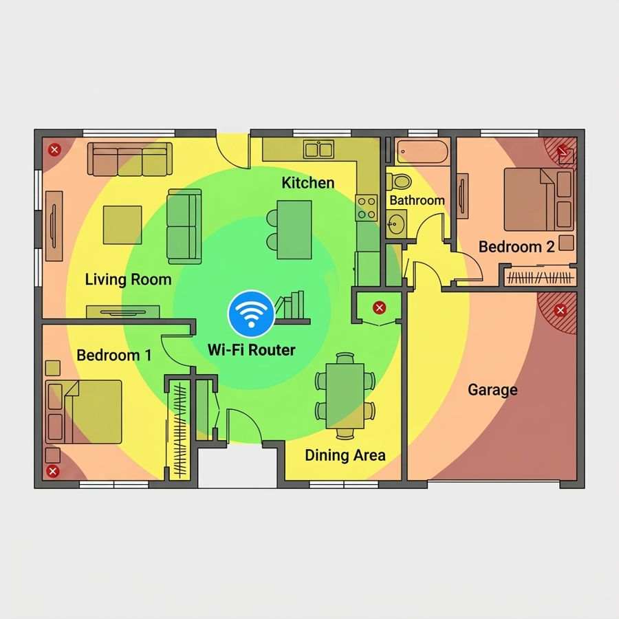
Dropping video calls and frozen loading screens show your standard home router cannot handle your workflow. A single central router struggles to push signals through walls and floors, creating frustrating internet dead zones. Standard range extenders offer a clumsy, slow fix because they create secondary networks that force devices to constantly drop and reconnect as you move around.
LiquidComputerz blankets your property in seamless, high-speed coverage by engineering a customized mesh Wi-Fi network. We strategically position intelligent nodes that communicate to create a single, unified wireless footprint. Our technicians optimize bandwidth to prioritize your work traffic, eliminate buffering, and ensure rock-solid connections everywhere. Partner with us to banish connectivity headaches and unlock true internet speeds.
Banish home office dead zones with seamless mesh Wi-Fi.
Regis Metzger
Lead Technician at LiquidComputerz
August 14th, 2026 4:15PM (EST)Ditch the Fees: How to Upgrade Your Old Wired Security System to SmartThings or Home Assistant
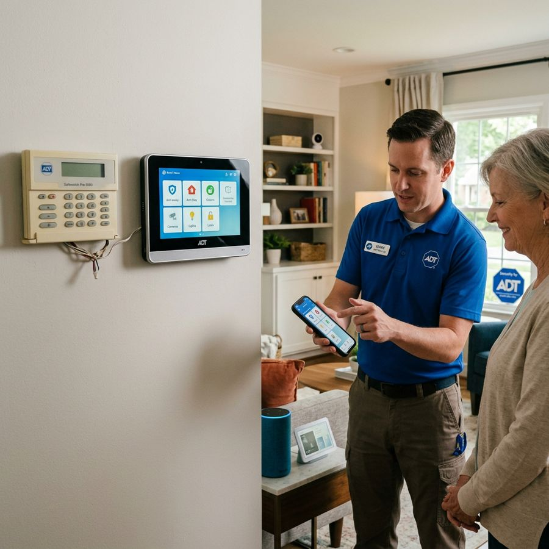
Legacy security systems lock you into outdated hardware and expensive monthly contracts. Swapping that old setup for SmartThings or Home Assistant allows you to repurpose existing wired sensors into a fee-free smart home ecosystem. However, converting old panels, rewiring low-voltage circuits, and integrating diverse smart devices can quickly become a frustrating DIY nightmare that leaves your property unprotected.
LiquidComputerz bridges the gap between old-school wiring and modern automation. We handle the heavy lifting by installing conversion modules, bridging hardwired sensors to your digital dashboard, and programming custom automation rules. Our technicians manage the complex software configuration so you can control your entire home securely from your phone. Partner with us to unlock a modern, fee-free security system tailored to your lifestyle.
Ditch expensive security fees for modern, automated home protection.
Regis Metzger
Lead Technician at LiquidComputerz
August 14th, 2026 4:00PM (EST)Locked Out of Your PC? How to Securely Regain Access Without Losing Your Critical Business Data
Hitting a concrete login wall and losing access to your computer can instantly paralyze your workday and spark immediate panic about data loss. Trying to bypass security gates using random online hacks or unverified software often triggers automated security lockdowns, which can permanently delete your critical business files. Whether caused by a corrupted user profile, an expired corporate password, or a malfunctioning security update, a lockout requires a precise, surgical recovery method rather than brute-force guesswork.
LiquidComputerz bypasses the panic to restore your system access safely, securely, and without erasing your valuable information. Our specialized technicians deploy advanced administrative recovery tools to crack open locked profiles, repair corrupted operating files, and verify user identities. We do not just get you back to work; we audit your login protocols to ensure a simple lockout never stalls your productivity again. Partner with us to resolve your tech emergencies swiftly and keep your critical business data completely protected.
Locked out of your PC, we regain access without data loss.
Regis Metzger
Lead Technician at LiquidComputerz
August 12th, 2026 4:10PM (EST)What Happens to Your Business Data If Your Office Floods or Loses Power?
A sudden office flood or power surge can instantly transform physical servers into expensive paperweights, bringing operations to a grinding halt. Many business owners mistake local external drives for a bulletproof safety net, forgetting that natural disasters destroy hardware and data simultaneously. Without a geographically isolated recovery plan, a single severe storm can wipe out years of critical financial records and client data, leaving your company crippled.
LiquidComputerz builds unbreakable digital fortresses that keep your business running through any disaster. We implement proactive strategies that replicate your entire infrastructure into secure, redundant cloud environments in real time. If your physical office goes dark, our team instantly spins up your virtual workspace so staff can work securely from anywhere. Partner with us to guarantee continuity and eliminate disaster panic.
Protect your data from disasters before the storm hits.
Regis Metzger
Lead Technician at LiquidComputerz
August 12th, 2026 4:00PM (EST)How to Safely Offboard Employees so They Can’t Take Your Company Data
When an employee leaves, an unmanaged exit can trigger a silent data breach. Simply reclaiming laptops or changing email passwords overlooks active logins on cloud apps, shared drives, and personal phones. This leaves a backdoor wide open for ex-employees to download client lists, steal intellectual property, or expose internal networks. Secure offboarding builds an airtight digital perimeter, ensuring company data stays where it belongs.
LiquidComputerz turns chaotic departures into a seamless, one-click separation process. We deploy offboarding protocols that instantly revoke application access, remotely wipe corporate files from personal devices, and archive email history for compliance. Our proactive team ensures no digital keys are left behind, protecting your reputation from the moment a staff member exits. Partner with us to lock down your network and streamline transitions.
Secure your data before your departing employees walk out with it.
Regis Metzger
Lead Technician at LiquidComputerz
August 12th, 2026 3:40PM (EST)The Ultimate Tech Stack for Growing Businesses in 2026
An outdated tech stack acts as a silent anchor, dragging down team productivity and stalling business growth. In 2026, scaling companies require unified digital ecosystems that seamlessly blend automation, artificial intelligence, and cloud flexibility into daily workflows. Building the ultimate stack means choosing robust, interconnected platforms for communication, project tracking, and data storage that grow alongside your headcount without costly reinvestments.
At LiquidComputerz, we engineer the exact operational blueprint your business needs to outpace the competition. We audit your current tools, eliminate software redundancies, and deploy secure, fully integrated tech stacks customized for your workflow. From centralized cloud environments to automated tasks, our team ensures your systems run flawlessly. Partner with LiquidComputerz to upgrade your technology, eliminate daily IT headaches, and build a powerful foundation for scalable success.
Build a modern tech stack designed to scale your business.
Regis Metzger
Lead Technician at LiquidComputerz
August 12th, 2026 3:10PM (EST)The 5 Biggest Security Mistakes Small Businesses Make
Small businesses are now primary targets for hackers because their defenses are often weak. Many owners mistakenly believe they are too small to notice, but automated bots scan the internet indiscriminately for vulnerabilities. A single breach causes devastating downtime, leaks sensitive client data, and destroys customer trust instantly.
The 5 Biggest Security Mistakes:
- Recycled passwords: Using the exact same password across multiple business accounts.
- No MFA: Operating without multi-factor authentication on email and financial tools.
- Outdated software: Delaying critical security patches on routers, computers, and servers.
- Untrained staff: Falling victim to basic phishing emails due to zero security awareness.
- Zero backups: Lacking secure, off-site, and isolated data backups for ransomware recovery.
At LiquidComputerz, we close these dangerous gaps before cybercriminals exploit them. We transition your business from reactive panic to proactive defense with managed firewalls, automated patching, and continuous monitoring. Our team deploys secure cloud backups and phishing simulations to protect your reputation and guarantee total peace of mind.
Protect your business before a hacker forces you to.
Regis Metzger
Lead Technician at LiquidComputerz
August 12th, 2026 3:00PM (EST)How to Tell If Your Business Is Wasting Money on Unused Software Licenses
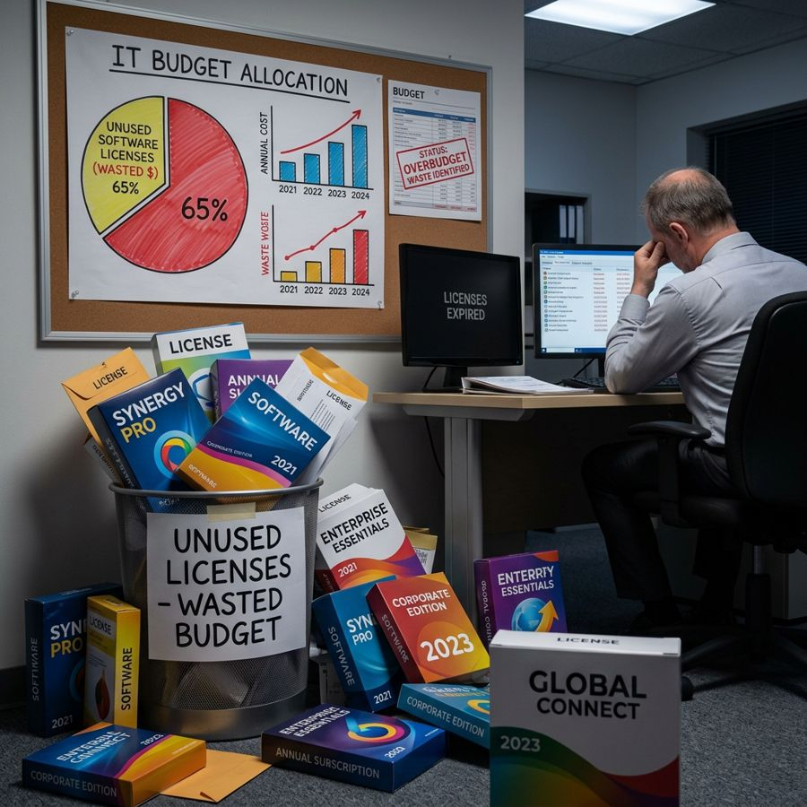
Unused software licenses silently drain thousands from growing businesses each year. This waste happens when companies fail to offboard former employees, buy bloated software bundles, or ignore automatic renewals. For business owners, these invisible expenses directly cut into profit margins without adding any operational value. A targeted blog post helps decision-makers spot these red flags, like redundant tools across departments or accounts with zero logins for 90 days.
At LiquidComputerz, we turn this financial frustration into a streamlined optimization strategy. We guide clients through structured software audits, cross-referencing active licenses against actual employee counts and daily tool usage. While manual tracking helps temporarily, our automated IT asset management continuously optimizes your tech stack. Partnering with LiquidComputerz eliminates software bloat, secures your network, and instantly lowers your monthly overhead.
Stop paying for software your employees don’t use.
Regis Metzger
Lead Technician at LiquidComputerz
August 7th, 2026 10:15PM (EST)Protect Your Assets and Reduce Retail Theft by Upgrading Your Store Security Systems
LiquidComputerz provides a comprehensive security installation process by blending advanced IT networking expertise with physical asset protection. We do not just mount cameras and walk away; our technicians design an interconnected defense system tailored to your unique store layout and high-risk blind spots. By seamlessly integrating your high-definition cameras, smart sensors, and alarm systems into a secure local network, we ensure your business benefits from reliable, high-speed surveillance footage without risking data leaks.
Our experienced team eliminates the stress of technical deployment by handling everything from complex wiring to remote monitoring mobile app configuration. LiquidComputerz prioritizes future-proof commercial hardware, meaning your newly installed systems are built to withstand high-volume retail environments and adapt to future software upgrades. Choosing us means securing your store with an optimized, professionally calibrated network that deters theft, protects your inventory, and gives you total peace of mind around the clock.
Pro Hardware Setup to Protect Your Store.
Regis Metzger
Lead Technician at LiquidComputerz
August 7th, 2026 9:45PM (EST)How Installing Pay-on-Site Kiosks Drives Immediate Retail Revenue and Sales Growth
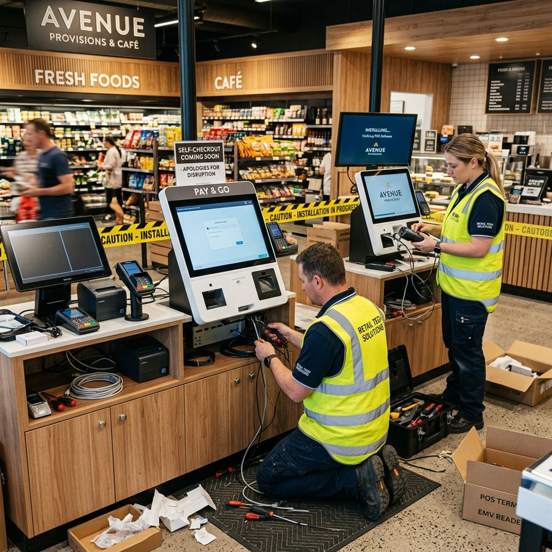
Choosing LiquidComputerz means partnering with technical experts who understand the critical link between hardware reliability and store revenue. We do not just drop off equipment; our team handles the entire deployment process from initial site assessment to final network integration. This turnkey approach ensures your new pay-on-site kiosks operate flawlessly from day one, minimizing store downtime and protecting your daily sales flow.
Our technicians bring specialized IT hardware experience to every installation, ensuring your payment terminals are secure, weatherproof, and fully compliant with modern payment standards. LiquidComputerz prioritizes future-proof setups, configuring your infrastructure to handle seamless software updates and high-volume transactions. By trusting us with your rollout, you gain a robust system built to reduce customer wait times and lower operational overhead for years to come.
Flawless Kiosk Installations by the Tech Pros.
Regis Metzger
Lead Technician at LiquidComputerz
August 5th, 2026 5:00PM (EST)Why Elite Businesses Trust Our Complete Blueprint for Seamless Website Creation and Mastery
In today’s digital ecosystem, your website is the primary engine driving corporate growth. LiquidComputerz engineers this engine by blending bespoke web creation with proactive management to keep you running at peak performance. We eliminate technical overhead, allowing your leadership to focus on scaling operations while we deploy secure, high-converting platforms.
LiquidComputerz stands out by fusing high-tier technical mastery with business-centric strategy. We do not just build and walk away; we actively optimize your online presence for speed, security, and search dominance. Partnering with us transforms your digital storefront from a passive asset into a powerful revenue generator.
Elevate your brand with seamless web creation and mastery.
Regis Metzger
Lead Technician at LiquidComputerz
August 4th, 2026 3:30PM (EST)Scale Your Accounting Firm Instantly With Our Professional Technology Configuration and Setup Services
When your CPA firm needs flawless tech infrastructure, LiquidComputerz is the ultimate choice. We provide fluid, high-performance setups engineered specifically for the intense data demands of the accounting industry. Our experts don’t just plug in hardware; we seamlessly integrate and optimize your entire digital ecosystem, from secure client portals to cloud-based tax software. By eliminating bottlenecks, we ensure your systems flow smoothly even during the peak chaos of busy season.
Partnering with LiquidComputerz means choosing tech architects who prioritize your security, compliance, and billable hours. We know that in the financial sector, downtime and data vulnerabilities are completely unacceptable. That is why we implement bulletproof, enterprise-grade protocols during every installation, giving you absolute peace of mind. Let us handle the complex technical heavy lifting so your practice can focus entirely on driving client success.
High-performance technology configurations engineered for secure, efficient CPA firms.
Regis Metzger
Lead Technician at LiquidComputerz
August 3rd, 2026 11:15PM (EST)Transform Messy Server Closets into Scalable Professional Workspaces
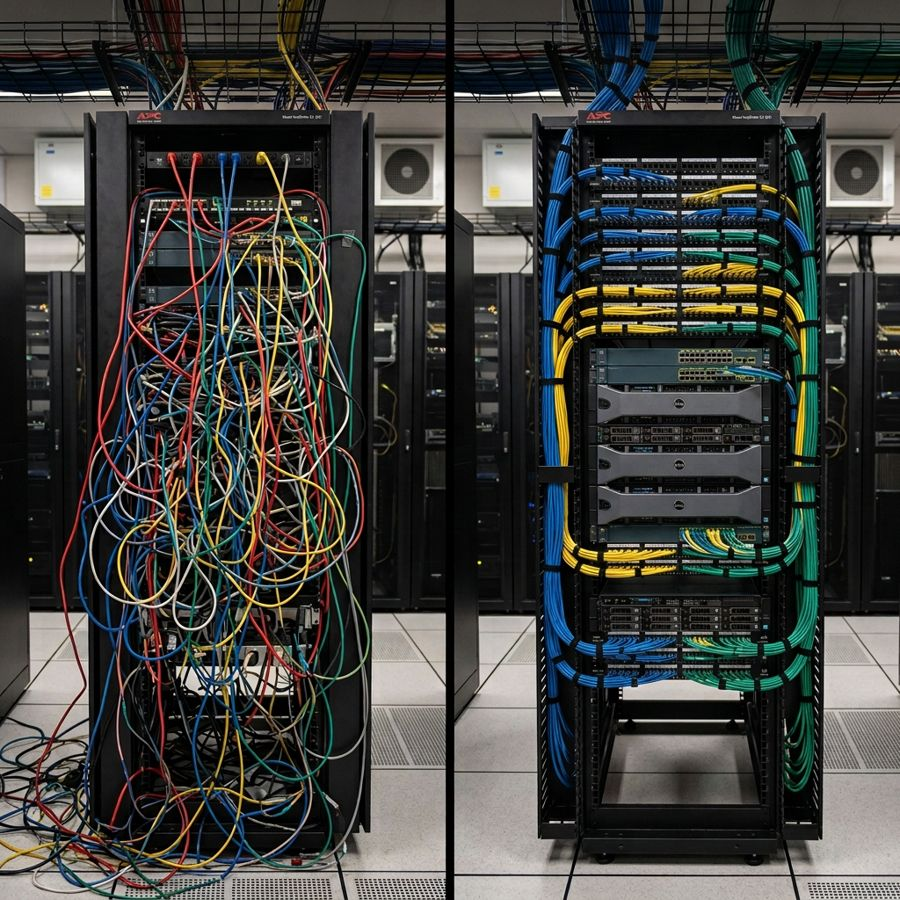
LiquidComputerz transforms chaotic corporate infrastructure into a masterpiece of technical efficiency. We systematically re-engineer your office networks and server rooms to optimize airflow, maximize footprints, and command authority during client walkthroughs. Our specialists design every inch with forward-looking scalability, creating pristine layouts where every cable is mapped and labeled for instantaneous access. Choosing us eliminates accidental disconnects while establishing an immaculate workspace that mirrors your high operational standards.
We bridge the gap between heavy-duty network functionality and sophisticated corporate aesthetics. Our team eliminates the costly “spaghetti wire” traps that stall business growth, replacing confusion with absolute diagnostic clarity. We plan each overhaul to guarantee minimal operational friction, leaving you with an agile environment primed for rapid, headache-free upgrades. Partner with LiquidComputerz to unlock an organized, future-proof network that fuels daily productivity.
Transform messy network cables into functional and professional workspaces.
Regis Metzger
Lead Technician at LiquidComputerz
August 3rd, 2026 11:00PM (EST)How Professional Home Automation Makes Hosting Large Family Parties Completely Stress Free
With LiquidComputerz, you get master architects of celebration. We engineer bespoke, future-proof entertainment systems that work flawlessly behind the scenes. Our specialists deliver white-glove installations that blend invisibly into your home decor. We handle the technical heavy lifting so you can focus entirely on making family memories.
We bridge the gap between sophisticated technology and user-friendly hospitality. While others just run wires, we craft immersive environments that turn your home into the ultimate event destination. Trust our rock-solid reliability for your next gathering. Let us ensure your next milestone is defined by laughter, not troubleshooting.
Flawless home entertainment installations for your next big gathering.
Regis Metzger
Lead Technician at LiquidComputerz
August 1st, 2026 9:00PM (EST)Revive Your Slow PC With Professional Deep Cleaning For Peak Speed And Performance
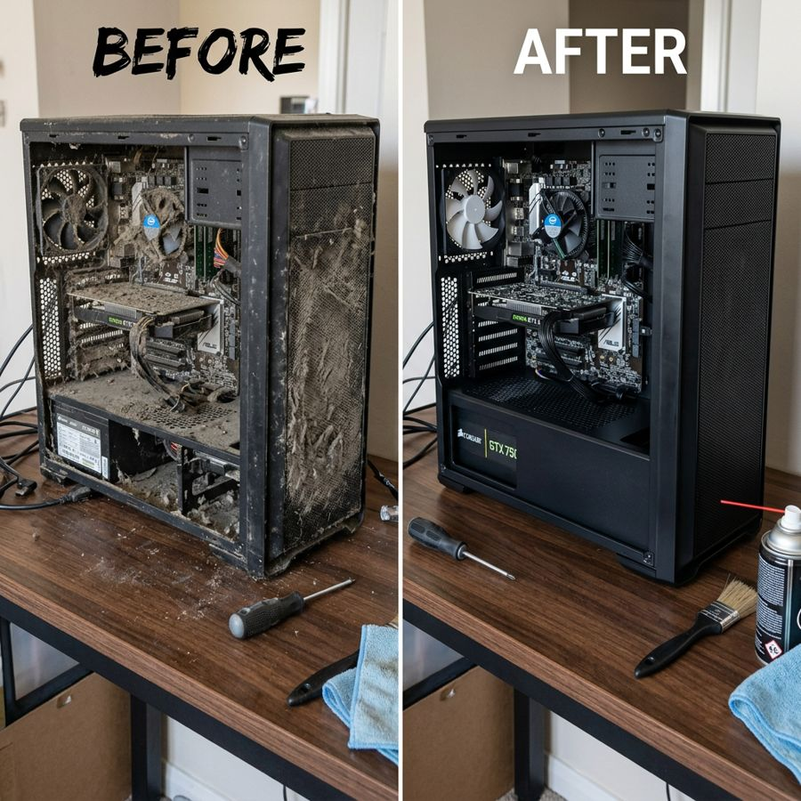
Dust and grime choke your computer’s cooling system, causing dangerous heat buildup. This thermal stress forces your system to slow down, leading to frustrating lag, sudden crashes, and premature hardware failure. Professional cleaning restores vital airflow, instantly boosting your speed and extending your device’s lifespan.
However, DIY cleaning with household tools risks fatal static shock or physical damage to delicate circuitry. Entrusting your machine to experts guarantees a thorough, risk-free sanitation using specialized anti-static equipment. Protect your investment and enjoy like-new performance without the anxiety of accidental damage.
Our professional cleaning boosts your computer speed and prevents costly damage.
Regis Metzger
Lead Technician at LiquidComputerz
July 31st, 2026 8:00PM (EST)Professional Data Transfer Services Ensure Your Vital Files Safely Move From Your Old PC To Your New Computer
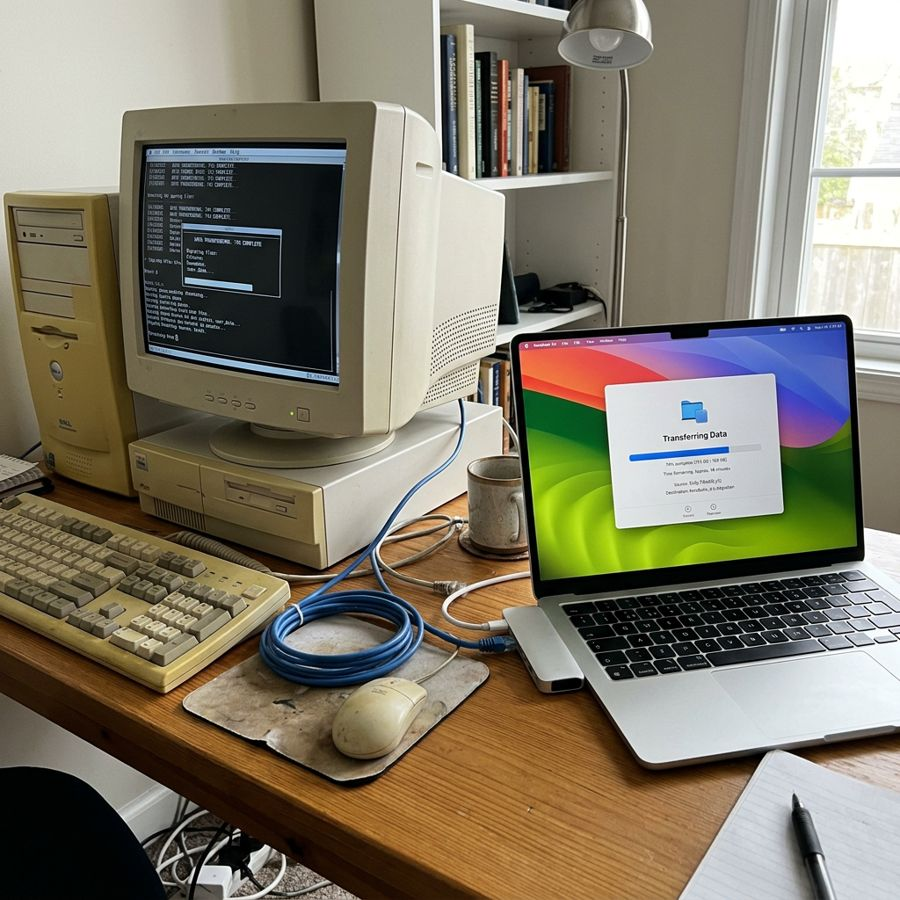
Leaving your digital life in someone else’s hands requires immense trust. We treat your family photos, financial documents, and personal files as if they were our own. Our certified specialists utilize secure, direct replication protocols that guarantee your files are never exposed or lost. Unlike unpredictable cloud backups, we oversee the transfer from start to finish. This ensures a flawless, secure transition so you can step away with total peace of mind.
We do not just move files; we seamlessly recreate your digital comfort zone on your new machine. Upgrading hardware should feel exciting, not exhausting. We eliminate the stressful guesswork of locating missing software, hidden folders, and buried application settings. Our proven track record means we handle fragile legacy drives with absolute precision. Choose a team that values your privacy, and enjoy a stress-free transition today.
We safely migrate your vital data with absolute privacy.
Regis Metzger
Lead Technician at LiquidComputerz
July 30th, 2026 8:00PM (EST)Protecting Your Elderly Loved Ones With Professional IT Camera and Motion Sensor Installation Defends Seniors From Vulnerable Home Invasions
Many families believe standard locks and generic porch cameras keep aging parents safe. However, traditional security leaves critical blind spots that tech-savvy home invaders exploit. Seniors face unique physical vulnerabilities, making rapid detection essential before an intruder reaches the door. Without professionally integrated motion sensors and IT cameras, you miss early warning signs. Relying on basic, unmonitored hardware loses vital minutes needed to deter criminals or alert emergency services.
True safety requires a seamless ecosystem where cameras and motion detectors communicate flawlessly. Off-the-shelf DIY systems frequently suffer from dropped Wi-Fi, dead batteries, and delayed notifications during crises. Professional IT installation ensures sensors ignore pets but flag human movement, keeping cameras hardwired for uninterrupted vigilance. Overlooking professional deployment misses advanced features like automated perimeter lighting and instant family alerts. Expert installation bridges the gap to a genuinely impenetrable home defense.
Empowering families with advanced security for total peace of mind.
Regis Metzger
Lead Technician at LiquidComputerz
July 29th, 2026 11:00PM (EST)Frustrating network issues? let us eliminate those connectivity glitches and optimize your home Wi-Fi for good
A sudden network outage can instantly disrupt your home, leaving your connected devices completely offline and unusable. We do more than just restore your internet signal; our team carefully reconfigures your entire network to ensure every smart device reconnects seamlessly and functions perfectly.
Skip the time-consuming trial and error of troubleshooting complex connectivity issues on your own. Our experienced technicians quickly isolate the root cause of the problem and deploy lasting solutions, saving you frustration and getting your home back online sooner.
Reliable home network troubleshooting to get your devices back online fast.
Regis Metzger
Lead Technician at LiquidComputerz
July 29th, 2026 10:30PM (EST)Upgrade your computer’s speed and security with modern performance solutions
Slow computer performance can quickly disrupt your day. We deliver fast, precise hardware and software solutions to restore your system to its peak operating speed, getting you back to business smoothly.
Do not risk data loss or worse damage by trusting an unverified repair technician. Contact us first to secure a professional, dependable fix before a minor technical glitch turns permanent.
Expert computer repair to restore your device like new.
Regis Metzger
Lead Technician at LiquidComputerz
July 29th, 2026 10:00PM (EST)Get your new printer running perfectly from day one—completely headache-free
A malfunctioning printer can stall your daily business operations or bring important home tasks to a complete halt. We eliminate that frustration by ensuring your equipment is configured correctly the very first time. Serving both residential and commercial clients, we are the premier choice for reliable, hassle-free printer setup and integration in the Palm Beach area.
Our experienced technicians understand the mechanics of seamless connectivity, from network synchronization to multi-device sharing. We have the background and hands-on expertise to handle any brand or model, ensuring your hardware communicates perfectly with your local network. You can skip the confusing manuals and trust our professional team to deliver a fast, dependable setup that keeps you moving forward.
Experience a seamless, headache-free printer setup.
Regis Metzger
Lead Technician at LiquidComputerz
July 29th, 2026 9:30PM (EST)Bring the Cinema Experience Home: Professional Home Theater Installation
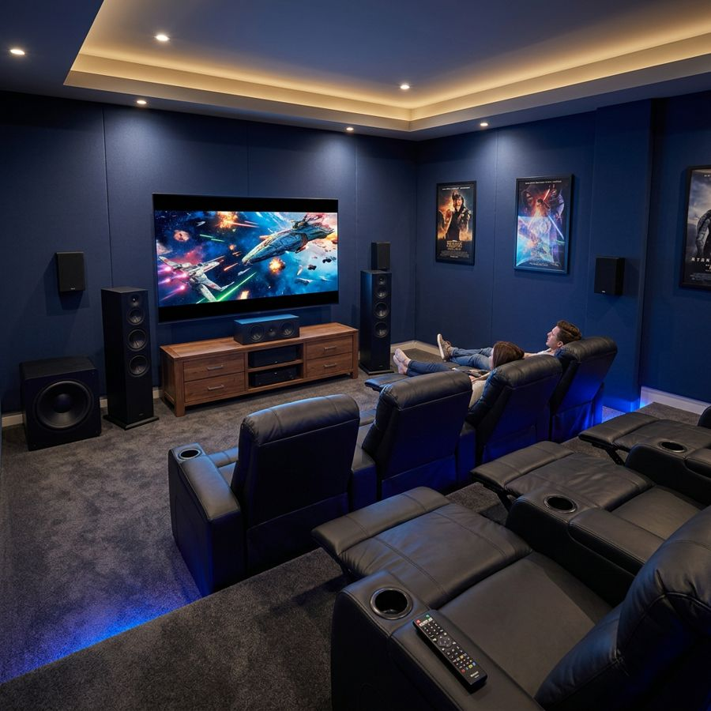
Transform your home with a custom theater system that rivals the commercial cinema experience. We ensure you receive maximum value for your investment by focusing on top-tier audio-visual quality, clean wire integration, and everyday comfort. Do not risk a poor setup with an inexperienced team; our experts handle precise calibration and can easily resolve frustrating issues with your existing equipment.
As a licensed, insured, and locally trusted low-voltage team, we prioritize your peace of mind. We treat your home with total respect, delivering transparent communication and clean, professional craftsmanship from start to finish. Choose a reliable local specialist to ensure your system is seamless, user-friendly, and perfectly tailored to your space.
Enjoy a complete, stress-free cinema setup tailored perfectly to your space.
Regis Metzger
Lead Technician at LiquidComputerz
July 29th, 2026 9:00PM (EST)Trust reliable experts to install your smart home security system
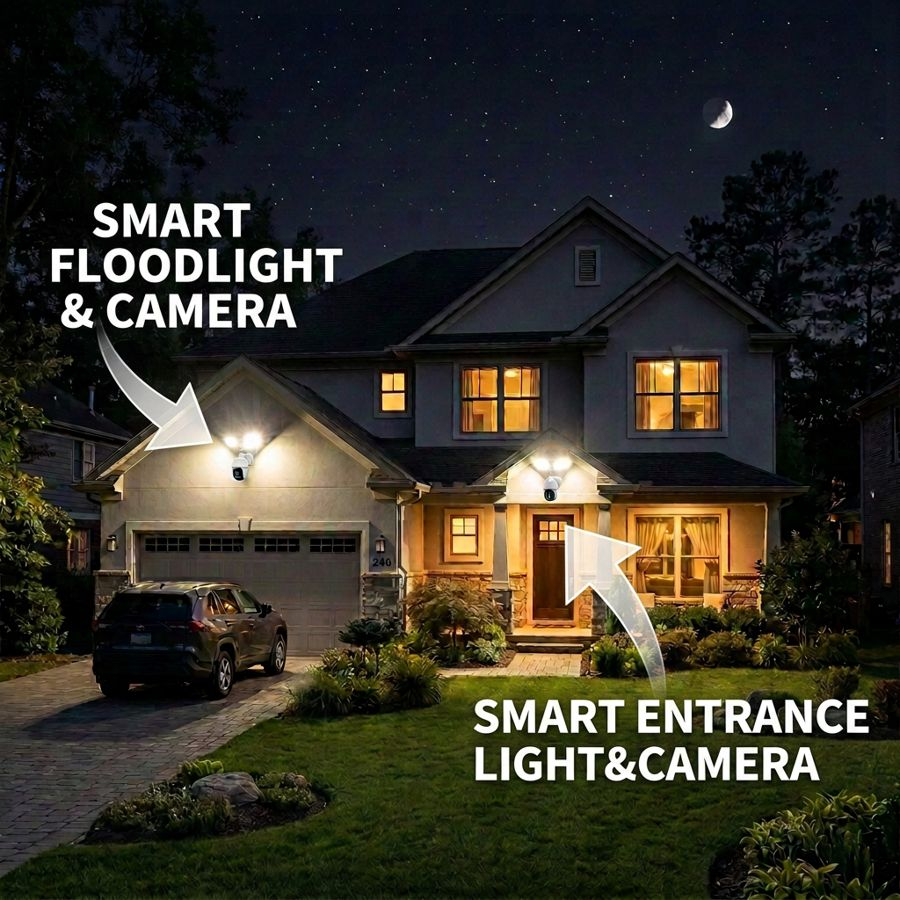
Professional security installation gives you total peace of mind without the DIY frustration. We provide expert smart home security setup for homeowners and businesses from West Palm Beach to Lake Worth. Our local technicians handle the precise mounting, wire management, and system optimization needed to keep your property entirely secure.
Whether you already have your gear or need help deciding, we work with all the major, top-tier industry brands. We specialize in configuring and installing smart ecosystems. Let us handle the setup so you know your cameras, video doorbells, and sensors are positioned perfectly and operating exactly as they should.
Let us be your one-stop shop for managing your home security system.
Regis Metzger
Lead Technician at LiquidComputerz
August 2nd, 2024 7:11am (EST)Why Choose A Custom Computer Builder Or Someone Local To You For Computer Purchasing Assistance?
We ran a across many scenarios in our experience where the client/customer overlooked the quality, value, and opinion for a price tag; When this happens we believe that we have unsuccessfully managed our goal of ensuring the client makes a well informed decision.
Things to consider when purchasing a computer:
- How long are the parts expected to last compared to what they cost?
- Are the used, new or refurbished?
- Are they fast or slow? Do they meet your needs and expectations?
Upon Request, this is what we can assist with:
- We evaluate our customers needs
- We assist with picking out the proper parts or computer
- We ensure the computer is up to par and satisfactory for the needs of the client.
Trust the people you pay but get second and third opinions when necessary.
Anthony Kron
Owner at LiquidComputerz
August 2nd, 2024 7:11am (EST)Local Tech Support – West Palm
This post is to remind our customers we are your local tech support. We offer a wide variety of I.T. & computer services at affordable rates in a timely manner. LiquidComputerz LLC is a great solution for residential and commercial problems that may arise with technology as we strive for out of the box thinking and I.T. solutions.
We are always here if you need help.
Anthony Kron
Owner at LiquidComputerz
July 14th, 2024 2:53am (EST)West Palm Beach Security News
Lots of our local residents here in West Palm Beach have been falling victim to fraudulent scams and more. Here are a few steps to remember:
- Do not allow anyone remote access into your computer, if remote access is absolutely necessary, then it should be someone you absolutely trust.
- Do not send money back to anyone without confirming or involving your bank in great depth, some scams are centered around an accidental over payment.
- Always be cautious and weary
- Do not visit unfamiliar or unsafe sites
- Virus scan your computer often
- Do not log into banks or any website that contains funds on a public computer or on a public wifi.
- Banking should really be done at the bank for security in our opinion.
Stay safe, stay vigilant, there’s always someone smarter.
Anthony Kron
Owner at LiquidComputerz
July 11th, 2024 9:18am (EST)I.T.: The Door That Opens All Doors
As I get older I start to realize more and more how beneficial learning I.T. has been; Some days, I feel as if I can learn anything with a simple Google search. I always say, Google is my best friend, and there’s nothing I cant figure out.
What if there was no google search and the internet was “limited” in a sense…makes you wonder what we know and what were currently being allowed to see if not everything.. but who knows.
I love I.T. and everything that is IOT….
I geek out over the simple stuff, some of you understand.
Anthony Kron
Owner at LiquidComputerz
July 10th, 2024 12:50 PM (EST)Laptops VS Desktop Computers
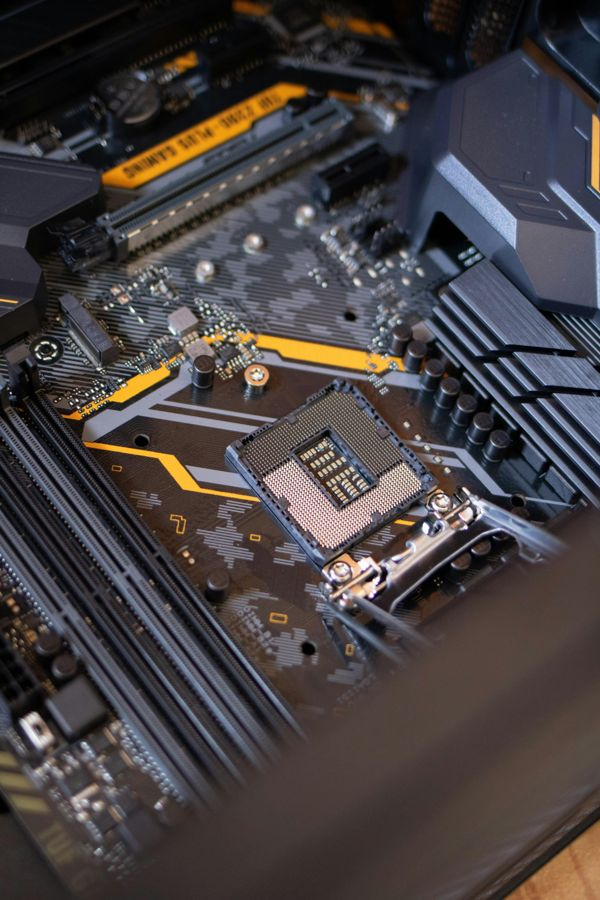
The sword vs the pen..or…the pen vs the sword; Regardless of how the saying goes, there is no comparing a laptop vs a desktop as they just have completely separate purposes and abilities, similar to that of a pen vs sword.
For starters, a laptop brings a user convenience of being able to travel and carry them, they are portable devices.
A laptop is generally not meant to be upgraded and sometimes is not cost effective to repair.
On other hand, a properly built and maintained desktop can be upgraded and repaired, usually, at a cost effective rate but they are not portable devices, they are meant to be on top of a desk as the name suggest.
In my belief, I believe a well taken care of desktop has a better chance of lasting longer then a well taken care of laptop. Laptops are meant for convenience, efficiency, and space while desktops focus on power and efficiency, to my understanding of course.
I recommend all my clients/customers to have desktop computers unless they travel with their devices.
All my computers are desktops except for my work laptops.
Anthony Kron
Owner at LiquidComputerz
April 15, 2024 06:51 AM (EST)How To Get Into I.T.
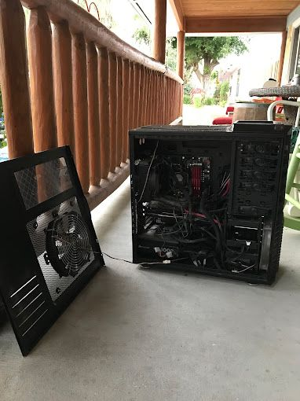
Oh we love this question!
Well keep it simple by giving you the first step to learning I.T.…in our opinion:
There is many ways to get into I.T. but what we find to be most efficient is generally getting an broad approach and understanding of loads of aspects and principles before narrowing down onto your specific trait. For instance, we recommend I.T. guys or gals should learn how to build a computer first before learning networking principles. Get hands on!
Computers are simple for instance, to build a computer it only requires a few parts such as a CPU, GPU, Motherboard, Fans, Operating System, Coolers, PSU, Thermal Grease, and generally a case of some sort. Once you have the pieces and there compatible, its as simple as following a set of instructions to put it all together and build a computer.
Contact us if you have any questions. https://liquidcomputerz.com/Contact/.
Tech support videos and tutorials can be found on our YouTube channel at: https://www.youtube.com/@liquidcomputerz1449/videos
I still remember my first computer build, it was a custom, dual reservoir, Open loop, liquid- cooled desktop computer…. and guess what?
I still have it to this day…
Anthony Kron
Owner at LiquidComputerz
April 15, 2024 12:59 AM (EST)Our Intent With this Grapevine
We want to guide you through news, updates, and more. If you have any idea for our team to talk about or discus on the grapevine, send us a message and let us know at anthonykron@liquidcomputerz.com or use our contact form at https://liquidcomputerz.com/Contact/.
Exciting I.T. Computer Builds and Unique Computer Builds, as well, Tech support videos and tutorials can be found on our YouTube channel at: https://www.youtube.com/@liquidcomputerz1449/videos
Following Our Instagram For Pictures and Updates: https://www.instagram.com/liquidcomputerz
You can always reach us at: https://liquidcomputerz.com/Contact/
The intent is to guide people while making technology problems, questions, and scenarios easier and more efficient.
Technology improves life, improving technology, pushes our standards of life.
Anthony Kron
Owner at LiquidComputerz
April 15, 2024 12:40 AM (EST)Lets bring I.T. BACK TO THE BASIC’S
Its been some time, but lets bring things back to the basics:
Is Turned On? I’m serious!
Is Everything Plugged In?
When Did the issue occur?
Any Storms In The Area?
Any Power Outages?
Any Noticeable Damage?
Did you Pour Water On It? Kidding!
I believe I can make Internet Technology simple for anyone whos willing.
Stay with us and we can figure out anything together!
Anthony Kron
Owner at LiquidComputerz
May 21, 2023 09:12 AM (EST)Tik-Tok Ban
Lots of discussion going on lately about the popular social media app Tik-Tok. Many lawmakers and government officials see a security problem and concern with the popular app causing lots of debate whether or not the app should be banned. What do you think?
Social media apps come and go; I wouldn’t get too attached to any app.
We have no input or opinion on whether or not Tik-Tok should be banned in the United States.
Anthony Kron
Owner at LiquidComputerz
April 29, 2023 10:12 AM (EST)Dont Fall For The Geek Squad Scam!
It would appear the Geek Squad Best Buy scam that’s been going around for quite some time has only gotten bigger. Everyday we are faced with more and more complaints from customers informing us they were scammed after being offered a refund, our team has investigated these offers and this scam in depth, we have to admit, it can be very convicting but theirs always key factors (located below) to look for in scam emails.
Tips To Avoid Scam Emails:
– DONT GIVE ANYONE ACCESS TO YOUR COMPUTER!
– DO NOT follow instructions from a stranger that is not with you in person.
– ALWAYS check the email address sending the email and verify if before opening or interacting with the email.
Contact Us Now To Protect Your Devices
Everyday we are seeing more of our customers being scammed by this exact scam and we try our best to keep our customer duly informed. In the past year, we had over 5 customers targeted with this exact scam; This matter is becoming more concerning considering the amount of money these scammers were able to take.
Anthony Kron
Owner at LiquidComputerz
April 29, 2023 10:10 PM (EST)Keep Your Computer Running Smoothly
- Running daily, weekly, or monthly virus scans.
- Run Disk Defragmenter at least once a month.
- Run Disk CleanUp or similar program once a week.
- Remove unused and unwanted programs and software.
- Know your computers hardware limitations and don’t push it.
- Update your computer.
LiquidComputerz LLC is not responsible for any lost, damaged, or corrupted data as a result of our recommendations.
Contact Us Now To Keep Your Device Running Smoothly.
We understand the need for a fast computer as a slow one will hinder your daily activities. We keep our clients computers updated, clean, and running as efficiently as the hardware will allow.
Anthony Kron
Owner at LiquidComputerz
April 26, 2023 12:12 PM (EST)USB DEVICES AND AIRPORT SECURITY
Going traveling? Thinking of using the airport charging ports? Its pretty convenient being able to plug in our devices just about anywhere now but there’s and increasing risk associated with plugging it in, hackers. Hackers are utilizing free charging stations to steal your personal information and data. Its hard to imagine that an outlet or USB port in a public place could be vulnerable, especially an airport, but its an ideal place for hackers as most people aren’t concerned with what their plugging their device into and that’s the big issue.
tips to Keep your data safe by:
– DONT PLUG IN YOUR DEVICES IN PUBLIC PLACES!
– Dont access public Wi-Fi networks or free Wi-Fis.
– Dont charge your devices in public places
Contact Us Now To Protect Your Devices
Its pretty convenient being able to plug in our devices just about anywhere nowadays but I on a daily basis am concerned with what I’m plugging my device into, who has access to it, and how long they will have access to it and my information.
Our phones and devices have now become an extension of ourselves containing vulnerable data. As convenience increase, device security and security itself will only be harder to manage.
Anthony Kron
Owner at LiquidComputerz
April 26, 2023 12:34 PM (EST)Google Rolls Out New Security Features
Google has rolled out some banging new features into Chrome. Features such as Context-aware AI and URL filtering for companies will be utilized on a daily basis by many organizations and individuals going forward. The context AI feature allows for users to specify the device and security for accessing sensitive data. Machine not up to date? No access. The URL filtering has been around for some time but it seems Google has rolled it out into its platform so network administrators can restrict or warn users before accessing restricted sites.
Google Chrome is a fan favorite of mine when it comes to web browsing. I think its a stellar browser and its ease of use its top of the line. I’m glad to see them adding more features as its hard to improve on something so great as is.
Anthony Kron
Owner at LiquidComputerz